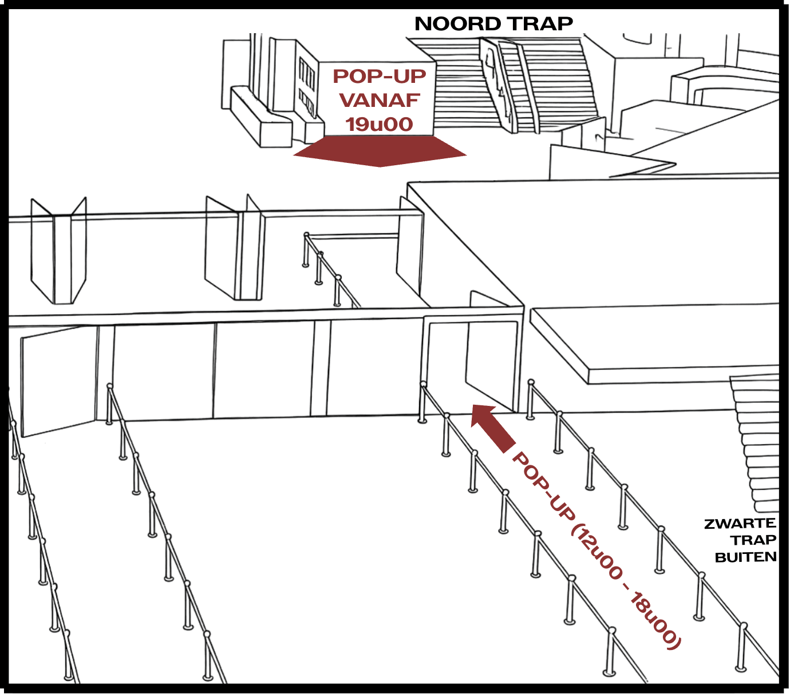

Upcycle pop-up
zaterdag 7 november 2026, Ziggo Dome
€25 per item
Breng je eigen T-shirt, hoodie of blanco totebag mee
Voor het eerst in Nederland: de upcycle pop-up van Pommelien Thijs! Je brengt je eigen T-shirt, hoodie of blanco totebag mee naar Ziggo Dome. Wij geven het een tweede leven met een unieke Pommelien-print.
Want: Fuck Fast Fashion.
- Wanneer:
- zaterdag 7 november 2026
- Prijs:
- €25 per item.
Zonder timeslot, geen print. Eén reservering = één item.
Snel zijn loont: van elke print hebben we maar een beperkt aantal. Op = op.
Geen concertticket? Je bent ook welkom! Boek dan een timeslot tussen 12u00 en 16u00.
Hoe bestellen?
Kies hieronder je timeslot. Dit is het uur waarop je je item komt afgeven. Je betaalt meteen online.
Check je mailbox, daar zit je bevestiging. Niks gezien? Kijk even in je spam.
Op 7 november kom je tijdens je timeslot naar de pop-up, met je item en je bevestigingsmail. Waar? Dat hangt af van je timeslot: kijk in de tabel hieronder.
Zeg je naam aan de balie. Je krijgt een nummer. Maak er meteen een foto van, want met dat nummer haal je je item af.
Kies je favoriete print. Wie eerst komt, heeft de meeste keuze.
Wij gaan aan de slag. Jij hoeft niet te wachten: ga gerust iets eten of drinken.
Op het afgesproken uur kom je je item afhalen (kijk tabel hieronder).
Waar afgeven en afhalen?
Je vindt ons op twee plekken. Waar je moet zijn, hangt af van je timeslot.
Aan de ingang
Aan de ingang van Ziggo Dome, links van de grote trap, op de begane grond.
Binnen
In de entreehal van Ziggo Dome, naast de merchandise, bij de Noord-trap.


| Jouw timeslot | Afgeven | Afhalen | Concertticket nodig? |
|---|---|---|---|
| 12u00-13u00 | Aan de ingang | Aan de ingang, van 14u00 tot 17u30 | Nee |
| 13u00-14u00 | Aan de ingang | Aan de ingang, van 15u00 tot 17u30 | Nee |
| 14u00-15u00 | Aan de ingang | Aan de ingang, van 16u00 tot 17u30 | Nee |
| 15u00-16u00 | Aan de ingang | Aan de ingang, van 17u00 tot 17u30 | Nee |
| 16u00-17u00 | Aan de ingang | Binnen, na de show (vanaf 23u00) | Ja |
| 17u00-18u00 | Aan de ingang | Binnen, na de show (vanaf 23u00) | Ja |
| 19u00-20u00 | Binnen | Binnen, na de show (vanaf 23u00) | Ja |
Lukt het niet om je item vóór 17u30 af te halen? Niet getreurd, dan ligt het na de show binnen voor je klaar. Daarvoor heb je wél een concertticket nodig. Kom meteen na de show, want om middernacht gaat Ziggo Dome dicht.
Geen concertticket? Je bent ook welkom maar boek dan een timeslot tussen 12u00 en 16u00. Je geeft je item af én haalt het af aan de ingang, uiterlijk om 17u30. Daarna ligt je item binnen, en daar kom je niet zonder ticket.
Kies hier je timeslot
Kies het uur waarop je je item komt afgeven. Nog twijfels? Scroll even naar de veelgestelde vragen hieronder.
Boeken opent binnenkortFAQ
Veelgestelde vragen
Kan ik mijn eigen T-shirt of hoodie laten bedrukken?
Ja, dat is net de bedoeling! Breng je eigen T-shirt, topje, sweater, hoodie of blanco totebag mee. In de pop-up kies je jouw print.
Hoeveel kost het?
€25 per item. Je betaalt meteen online als je boekt.
Moet ik vooraf boeken?
Ja. Zonder boeking, geen print. Wees er dus snel bij, want op = op.
Kan ik mijn boeking annuleren?
Annuleren kan niet en we betalen niet terug. Je mag je bevestiging wel aan iemand anders geven.
Welke timeslots kan ik kiezen?
- 12u00-13u00: afgeven en afhalen aan de ingang. Afhalen van 14u00 tot 17u30.
- 13u00-14u00: afgeven en afhalen aan de ingang. Afhalen van 15u00 tot 17u30.
- 14u00-15u00: afgeven en afhalen aan de ingang. Afhalen van 16u00 tot 17u30.
- 15u00-16u00: afgeven en afhalen aan de ingang. Afhalen van 17u00 tot 17u30.
- 16u00-17u00: afgeven aan de ingang. Afhalen binnen, na de show.
- 17u00-18u00: afgeven aan de ingang. Afhalen binnen, na de show.
- 19u00-20u00: afgeven binnen. Afhalen binnen, na de show.
Tussen 18u00 en 19u00 zijn we even dicht. Geen concertticket? Kies dan een timeslot tussen 12u00 en 16u00.
Wat als ik te laat ben voor mijn timeslot?
Kom gewoon nog langs binnen de uren van jouw plek. We printen in volgorde van aankomst, dus je haalt mogelijk later af. Zonder concertticket: geef uiterlijk om 16u00 af.
Kan ik meerdere items laten bedrukken?
Zeker! Eén boeking is één item. Voor twee items boek je dus twee keer. Is je timeslot vol? Kies dan een ander uur voor je tweede item.
Welke prints kan ik kiezen?
Je kiest ter plekke aan de balie. Van elke print hebben we er maar een beperkt aantal, dus op = op. Wie eerst komt, heeft de meeste keuze. Heb je je hart al verloren aan één print? Kies dan een vroeg timeslot.
Waar geef ik mijn item af?
Dat hangt af van je timeslot:
- Tussen 12u00 en 18u00: aan de ingang van Ziggo Dome, links van de grote trap.
- Tussen 19u00 en 20u00: binnen, naast de merchandise bij de Noord-trap.
Hoe en wanneer haal ik mijn item af?
Geef je nummer en je naam aan de balie.
- Timeslot tussen 12u00 en 16u00: aan de ingang, tot 17u30. Vanaf welk uur staat in de tabel hierboven.
- Timeslot tussen 16u00 en 20u00: binnen, na de show (vanaf 23u00).
Niet gelukt vóór 17u30? Niet getreurd, dan ligt je item na de show binnen klaar.
Wat gebeurt er met mijn item als ik het niet kom afhalen?
We bewaren je item. Mail ons, dan zoeken we een oplossing.
Heb ik een concertticket nodig?
Dat hangt af van je timeslot:
- 12u00-16u00: nee. Je geeft af en haalt af aan de ingang, uiterlijk om 17u30.
- 16u00-20u00: ja. Je haalt je item binnen af, na de show.
Kan ik ook officiële merch kopen?
Zeker! Binnen in Ziggo Dome vind je onze merchandisestands. Daarvoor heb je wel een concertticket nodig. Aan de ingang verkopen we geen merch.
Moet mijn item aan voorwaarden voldoen?
Ja, een paar:
- Wel: T-shirt, topje, sweater, hoodie of blanco totebag.
- Niet: andere items. Zo kunnen we een mooie print garanderen.
- We printen niet op ritsen, knopen of bestaande logo's.
- Tip: hoe meer katoen, hoe mooier je print.
Nog een vraag?
Stuur ons een mailtje via info@pommelienthijs.be.